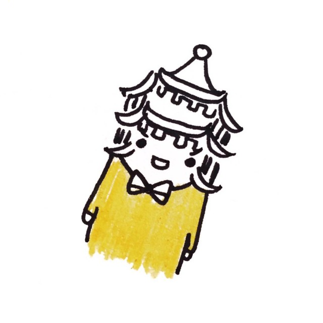

台湾见闻 | 性别那些事儿
以下文章来源于ColorsWorld ，作者湘子

ColorsWorld
.
这是一个颐和园路5号的神秘柜子。多元性事尽在其中。
制作 | 小年

知乎上有很火的问题是「在公交车上遇到咸猪手怎么办」，很多妹子和汉子都分享了自己勇斗色狼的经历，但同样也有很多人说「不敢做声，心里感觉很恶心」。个人的勇敢是值得提倡的。但我想如果我们的乘客也能够理直气壮地寻求司机的帮助，并相信自己的诉求不会被置之不理，那么大家才会更有安全感吧。


为提升校园性别平权观念，消除性别歧视，并建立性别平等之教育及工作环境，本校乃根据性别平等教育法、性别工作平等法及性骚扰防治法，成立性别平等教育委员会。